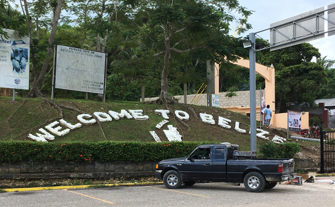
And, finally, we arrived into Belize and our last ruin of the trip, Xunantunich, which we had to reach via a small winch ferry. Plus the obligatory shifty-looking person offering to do you a currency exchange 'deal' ...
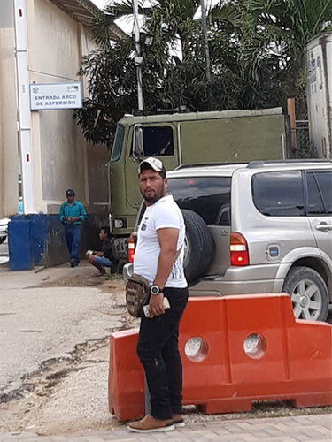
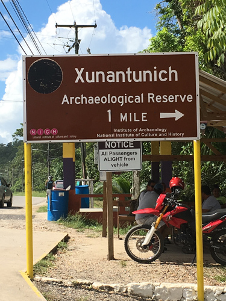
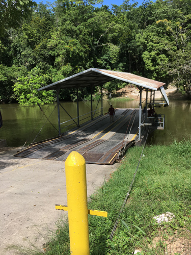
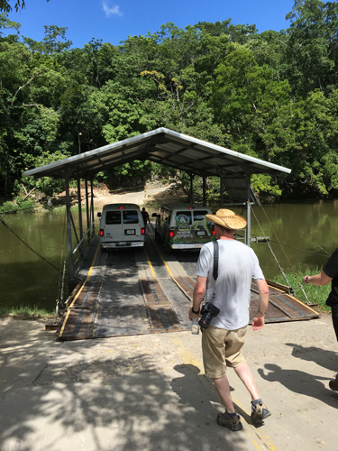
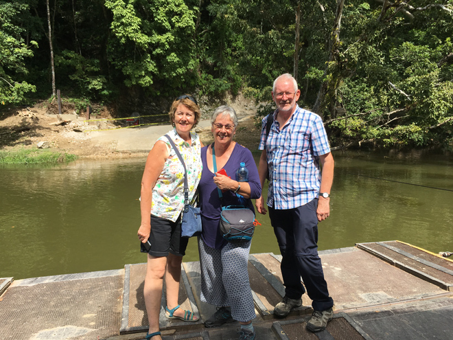
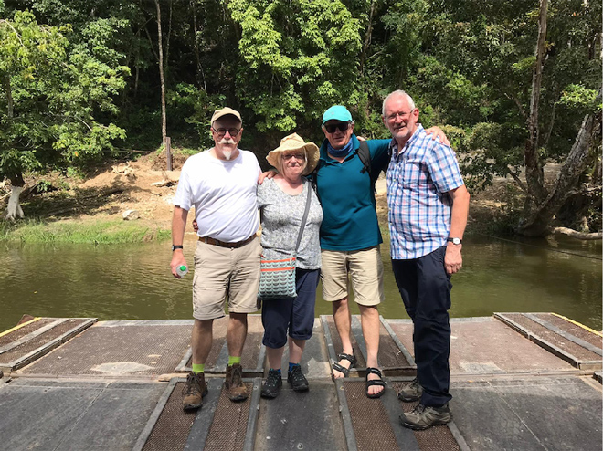
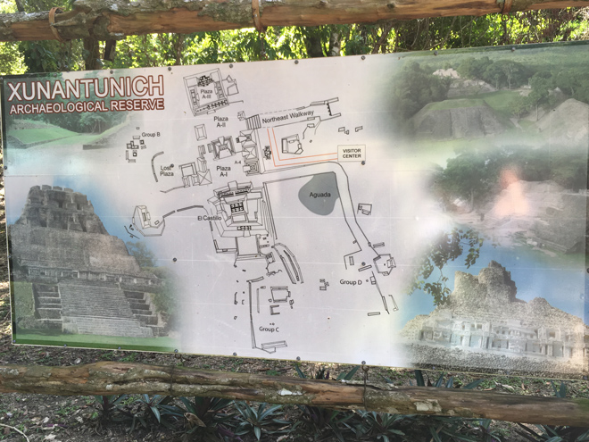
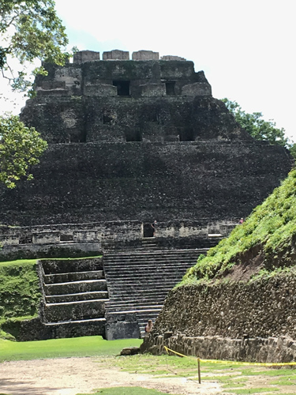
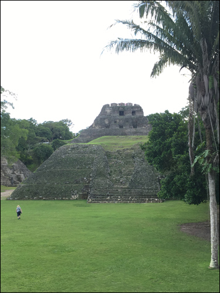
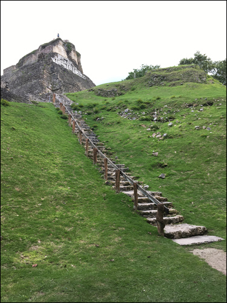
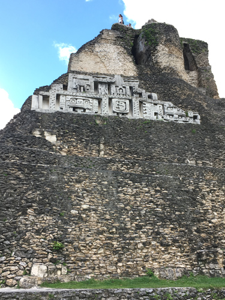
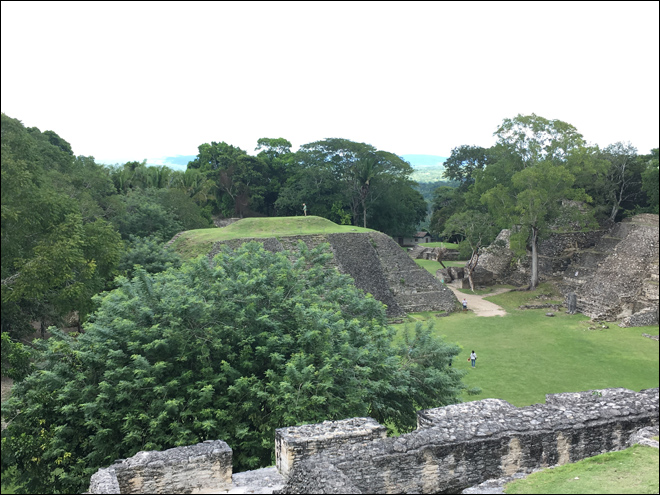
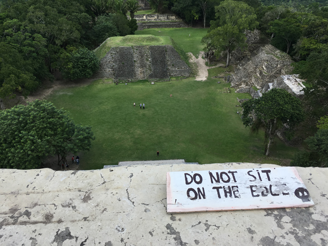
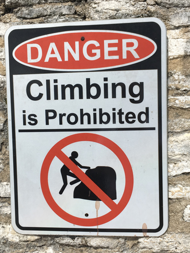
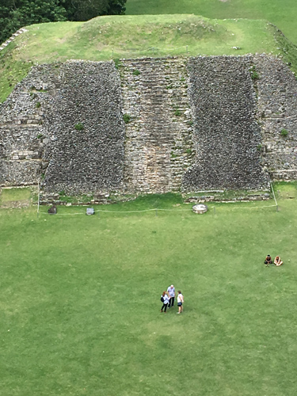
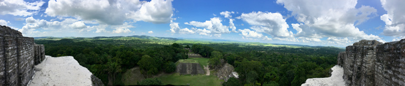
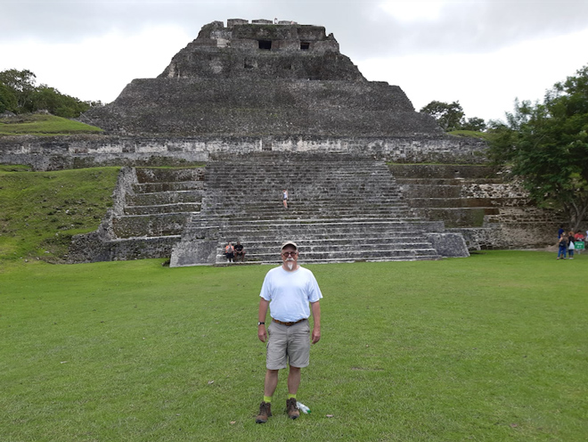
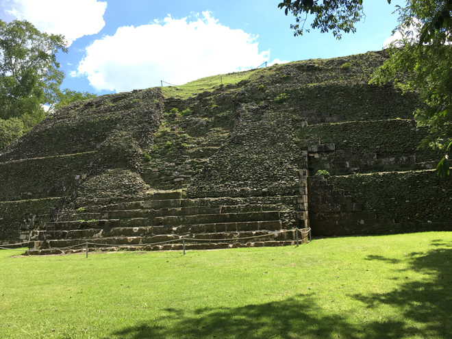
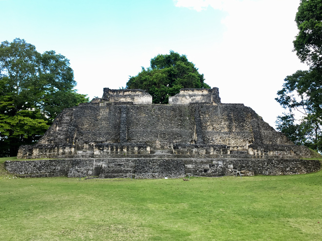
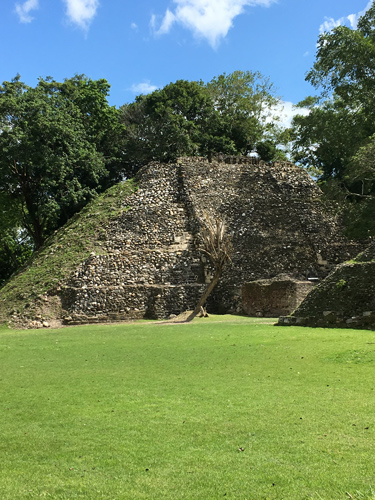
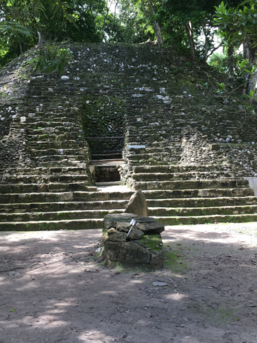
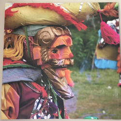
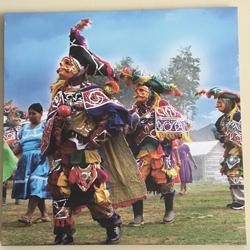
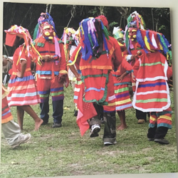
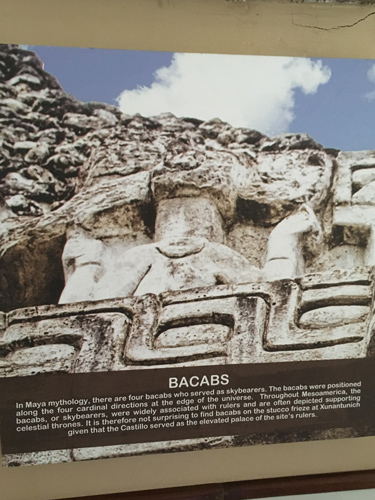
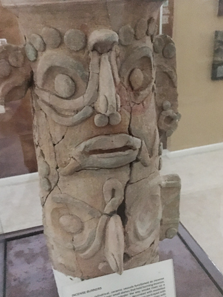
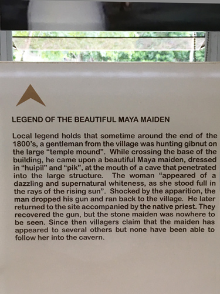
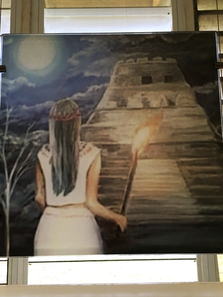
Back across the winch ferry and we found these pretty (if expensive) beaded hummingbirds for sale. We didn't buy any but I rather wish now that we had ...
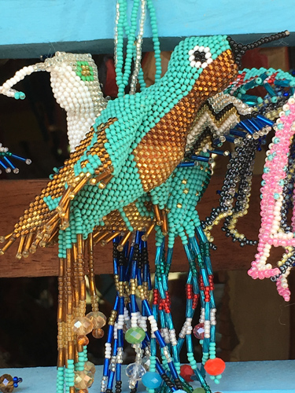
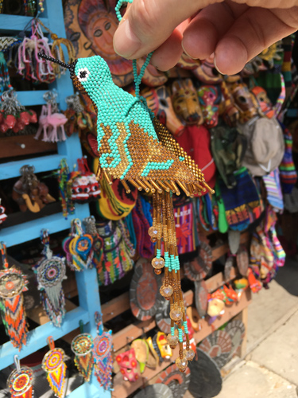
Our final night's hotel was charming: separate wooden cabins on stilts with verandahs.
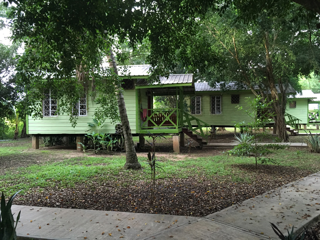
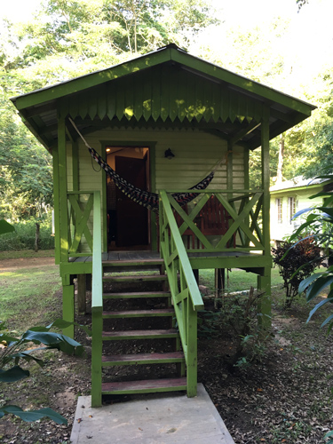
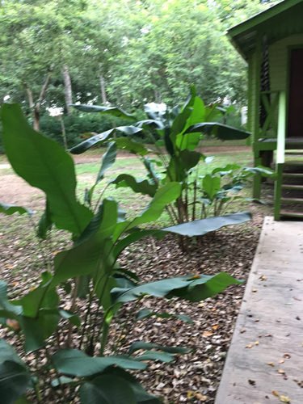
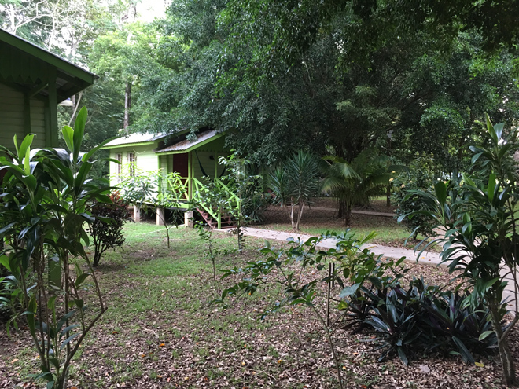
One last dinner and a chance to save yourself!
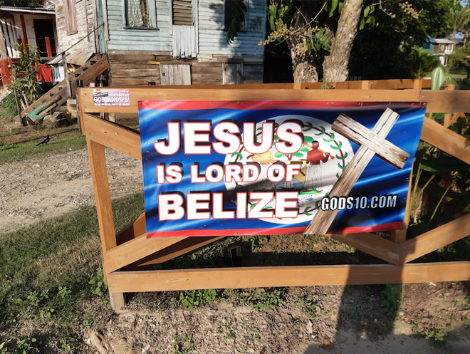
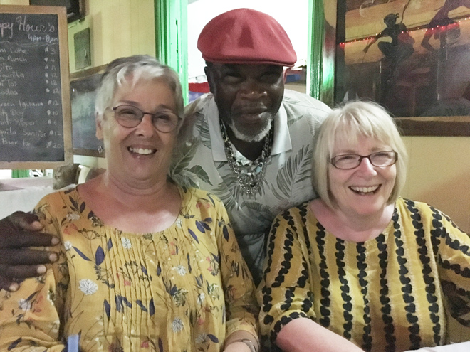
The final morning's breakfast before a bus trip to Belize City airport and our flight to Miami and thence onto Heathrow. Look what we found in a cabinet at the airport!
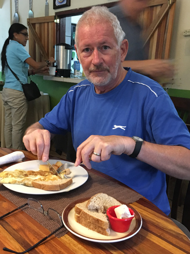
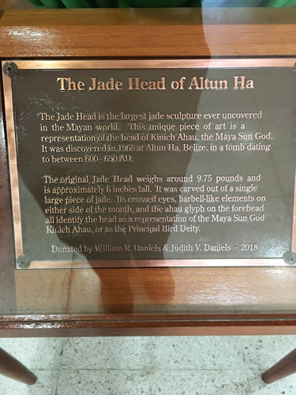
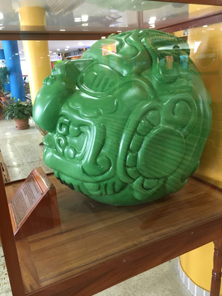
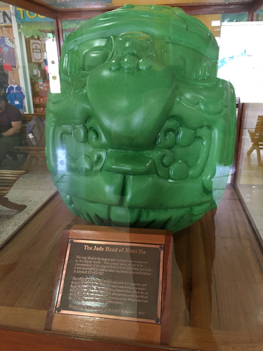